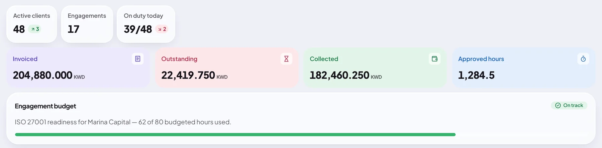
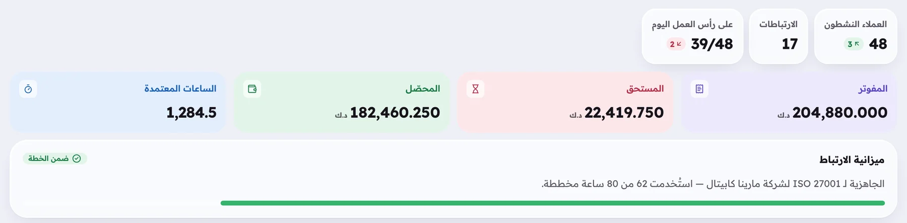
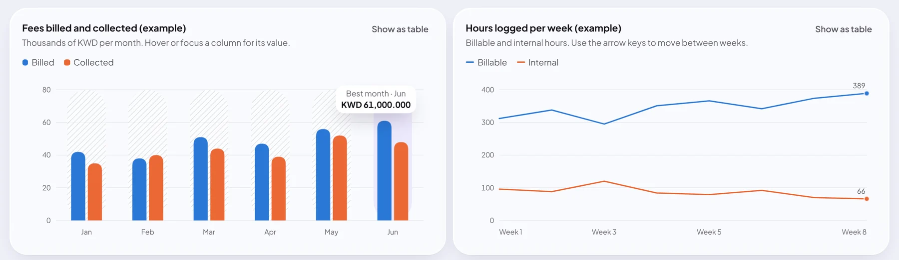
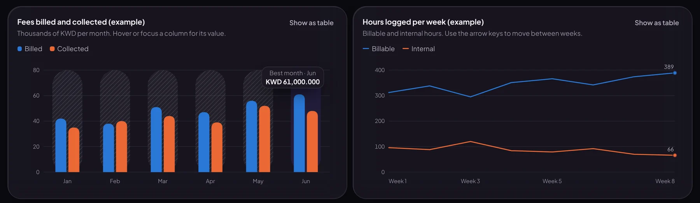
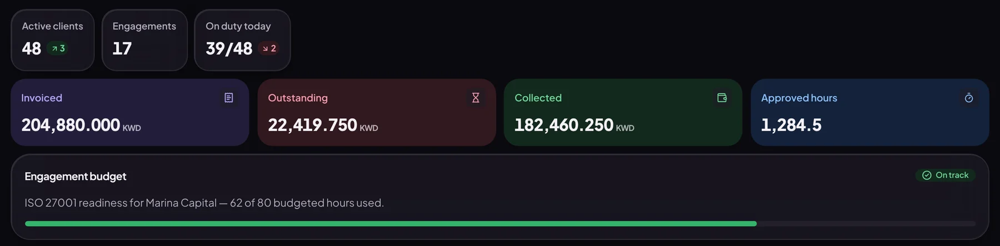

Ultimate ERP
A multi-tenant ERP for audit, risk and GRC firms, in English and Arabic with full right-to-left layouts. It handles the whole path from a signed engagement letter to a paid invoice, and keeps each company's data apart inside the database.


Interface screenshots use the example data from the product's design-system gallery, not a real company.
One system for the whole engagement
An audit or advisory firm sells hours against a budget. Ultimate ERP follows that money and time from the first client record to the final payment, so partners can see where each engagement stands without asking around.
Win and deliver work
From the first client to the finished engagement.
- Clients and activity timeline
- Contracts and engagement letters bilingual, six-step wizard, PDF
- Projects and budgets numbered revisions, never edited in place
- Tasks concurrency-safe hour allocation
Track time
Hours people can trust.
- Timesheets and timers
- Approval by the project's manager nobody approves their own
- Locked once approved, reopened with a reason
Look after people
HR with the right doors closed.
- Employees and teams
- Leave balances as a ledger
- Attendance rotating signed QR codes
- Payroll test-only until rules are verified
Get paid
Money, handled carefully.
- Invoicing and payments
- Expenses claims, approvals, re-billing
- Receivables aging
- Reports utilization, profitability, revenue
Run the platform
What every other module stands on.
- Accounts with two-factor sign-in
- Roles and permissions
- Append-only audit log
- Notifications and announcements
- File storage with virus scanning
- Founder console directory only, no business data
Take the tour
Screens from the running product, built on the demo company Al Noor Audit & Advisory.
Built so one firm can never see another's data
An ERP that serves many companies has one job it cannot get wrong: company A must never read company B's data. Checks in application code are not enough, because one forgotten check is a breach. So the rule lives in the database too.
Every request is tied to a company by its address, never by an ID the browser sends. The database then refuses any row that belongs to another company, even if the application code asks for it.
- Row-level security is forced on every company table, with three database roles for migrating, serving and platform work.
- A cross-company test suite proves the isolation, and a guard fails the build when a new table is not covered.
- Two-factor sign-in is required for sensitive roles such as Owner, CEO, payroll and exports.
- Private HR details are encrypted with a separate key, and uploads are virus-scanned before anyone can download them.
- The audit log is append-only, enforced by database triggers rather than by good behaviour.
- Money never touches a float. Amounts are exact decimals with three places, and travel as strings.
English and Arabic are both first-class
Kuwaiti firms work in both languages, often in the same meeting. In Ultimate ERP, Arabic is not a translation layer on top: every screen mirrors properly, numbers stay left-to-right inside right-to-left text, and the interface uses real Arabic typefaces.
Every piece of interface text lives in a catalogue for both languages, and the code only uses logical spacing (start and end instead of left and right), which a lint rule enforces. Each screen is accessibility-checked in both languages.
- Instrument Serif
- Plus Jakarta Sans
- Readex Pro
- Amiri
- Self-hosted fonts, so on-premises installs work offline
Invoice INV-0042
Sent- Client
- Marina Capital
- Engagement
- ISO 27001 readiness
- Due
- 30 November 2026
- Amount due
- KWD 4,250.000
Example data. Switch the language and the whole card mirrors.
Fast with two million time entries
I load-tested one company at the size the architecture targets: 500 people, 1,000 clients, 5,000 projects, 40,000 tasks and 2,000,000 time entries, with ten people using it at once. Each bar shows how much of its time budget the request used at the 95th percentile.
Screens and lists
Budget: 300 ms
Executive dashboard
Budget: 500 ms, about fifteen counts and sums across every module
Reports over a whole year
Budget: 2 seconds, about a million time entries each
Measured on 31 October 2026 on a development laptop with other work running, so treat the numbers as relative. The 2 million rows were seeded through the real constraints and triggers.
What the test found, and what I fixed
| Where | Before | After | Fix |
|---|---|---|---|
| Tasks report | 1.5 s | Counted per project in SQL instead of filtering 40,000 tasks once per project in Node. | |
| Utilization report | 0.8 s | Summed per person in the database instead of filtering a million rows per person. | |
| Receivables aging | 178 ms | Balances and buckets in one SQL query. | |
| Dashboard | 482 ms | Billing card in SQL and a partial index for "waiting for approval". | |
| First page load | 234 kB gzip | Each screen is its own code chunk. |
Checked before it was called done
Every phase ended with tests and a written hand-over. These are the results recorded in the readiness assessment.
API tests
Run against a real PostgreSQL, a mail catcher, object storage and the virus scanner. No mocks for the database.
Accessibility
Automated axe checks on every screen in English and Arabic, plus keyboard and focus checks.
Deployment check
Builds the production images and tests HTTPS, security headers, the full sign-up journey and a backup, end to end.
Backups
Encrypted backups, and an automated restore into a side database that never touches live data.
Dependency audit
No high or critical vulnerabilities, licences checked against an allow-list, and a secret scan on every build.
Real-browser tests
Playwright walks the whole first-day journey in English and Arabic: sign up, create a company, set up two-factor, invite someone.
A phone app for the people who are not at a desk
Auditors work at client sites. The Expo and React Native app covers what they need on the move: scanning the office's rotating QR code to check in, their tasks with a timer, their week of time, leave requests, and approvals for managers.
It signs in with the same secure session as the web, so there is no second login system to defend. The server address is configurable, so one build serves both the hosted product and an on-premises install.
- Attendance: QR check-in, history and correction requests.
- Tasks and time: status moves, a running timer, add and submit entries.
- Leave: balances, a request preview, withdraw and cancel.
- Approvals: leave and attendance corrections for managers.
- Tested in a browser preview against the real API, in English and Arabic. Store builds wait on developer accounts.
A design system, not a pile of screens
The first direction was a calm slate-and-teal look, and I rejected it as generic. The product now uses a "liquid glass" language: a pastel wallpaper, frosted surfaces, heavy tabular numbers and one deep plum for the main action. This site uses the same language.



- Plum
- Lilac
- Mint
- Blush
- Butter
- Sky
From brief to feature-complete in two weeks
I wrote the product brief, set the rules and made the product decisions. An AI coding agent did the implementation phase by phase, and every phase ended with passing tests and a written hand-over.
Architecture and product brief approved
Modular monolith, multi-tenant from day one, Kuwait first with KWD to three decimals.
Foundation
Company isolation in the database, accounts with two-factor, onboarding, invitations, roles, audit log, the design system and the app shell.
The core modules
Clients, contracts, projects, tasks, timesheets, employees, leave, attendance, payroll (test-only) and invoicing.
Expenses, reports and hardening
Notifications, reports, backup and restore, production deployment checks, the performance work above and a security review.
Mobile app and founder console
The Expo app with a header-based session, and a console where the platform owner sees companies, never their business data.
Liquid glass redesign
A new look across the product after the first direction felt too plain.
Where it stands today
- Technically ready for a staging install and a supervised pilot with synthetic or consenting data.
- Every phase of the original brief is built and verified.
- Payroll and leave rules are configurable company settings, pre-filled and marked "to be verified by a Kuwaiti lawyer or accountant". Payroll runs stay test-only until a CEO confirms that review.
What I would not claim yet
- It is not ready for paying customers: it still needs an external penetration test and legal review.
- There is no live pilot company yet.
- The mobile app is not in the app stores. That needs developer accounts.
Under the hood
- Web
- React 19
- Vite
- TanStack Router and Query
- Tailwind
- Radix
- TypeScript
- API
- NestJS
- Better Auth
- Zod contracts
- pg-boss worker
- OpenAPI
- Data
- PostgreSQL 18
- Drizzle ORM
- Row-level security
- S3-compatible storage
- ClamAV
- Mobile
- Expo
- React Native
- React Navigation
- Quality and shipping
- Vitest
- Playwright
- axe
- Docker Compose
- Turborepo and pnpm
- OpenTelemetry
Let's talk about what you're building.
I'm open to full stack, GRC technology, AI engineering and ERP roles, in Kuwait or remote. I'm happy to walk through the architecture, the code or a live demo.